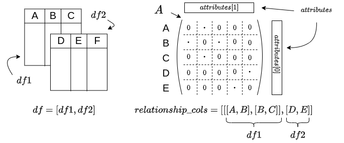

Overview
- The package includes the following modules:
preprocessing
matrix and graph tools
embedding
visualisation
hierarchical clustering
The functionality of the package is demonstrated in the tutorials through a few real datasets. However, further details on functionality can be found here.
Preprocessing
This module contains a variety of functions for preprocessing data with two outputs
matrix of the data,
list of two dictionaries , one for the rows and one for the columns, that contain the metadata of the data.
The types of data that can be processed include:
relational database: graph_from_dataframes, where pairs of columns are specified to indicate nodes in the same row have an edge between them,
time series data: time_series_matrix_and_attributes (in progress),
text data: text_matrix_and_attributes` where the column on text data is converted to tf-idf features (columns).
There is also functionality for finding connected components, subgraphs and converting to a networkx object.
Relational Database
The graph_from_dataframes function takes a few parameters but two main ones we’ll talk about here: tables and relationship_cols. tables is a list of dataframes. relationship_cols is a list of lists of columns, which indicates which pairs of columns we’re interested in. For example: If I have tables = [df1,df2] where the columns of each are cols(df1) = [A,B,C] , cols(df2) = [B,C,D,E], there are a couple of ways to use relationship_cols:
- If relationship_cols = [[A,B], [B,C], [D,E]]
the function will look for those pairs of columns in each of the tables,
from df1 I’d get the elements which are connected from A,B and B,C and from df2 I’d get the relationships from B,C and D,E
- I can be more specific and have relationship_cols = [[[A,B], [B,C]], [D,E]]
relationship_cols[0] would be the columns we search for in df1 and relationship_cols[1] would be the columns we search for in df2
In this case, from df1 I’d get the elements which are connected from A,B and B,C and from df2 I’d only get the relationships from D,E
A simplified version is described in this diagram:
{kind=link}
{kind=link}